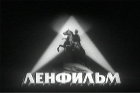
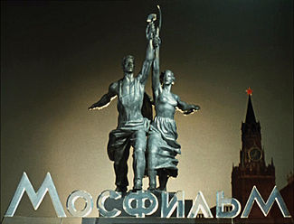
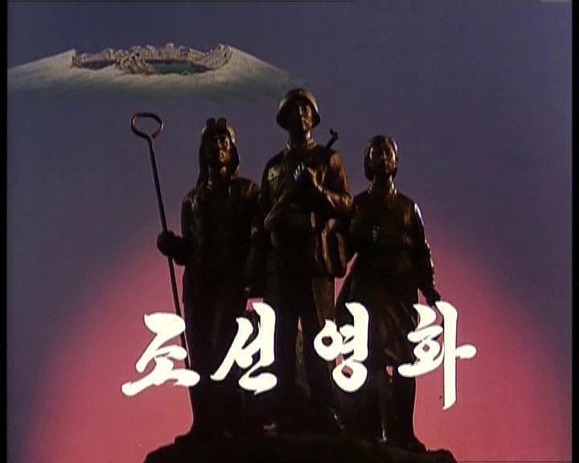

{kind=link}
{kind=link}
{kind=link}
{kind=link}
Con la tecnología de GitHub pages
El cine es una de las artes más difundidas e influyentes que existen y eso que surgió hace poco más de un siglo.
Hay bases de datos con cientos de miles de películas como Internet Movie DataBase o FilmAffinity. La propia Wikipedia dispone de incontables listados temáticos, centralizados en la página Lists of films y su respectiva categoría. Otras webs como RebeldeMule también recopilan miles de fichas de películas.
Pero entre tanta información conviene tomar notas para poder seguir explorando y no perderse. En esta página hago mi particular selección de géneros cinematográficos, estudios de cine, festivales, movimientos, directores y películas.
Estos son los principales géneros cinematográficos que estoy explorando. Algunas obras pueden pertenecer a más de un género o solaparse entre ellos:
|  |
|  |
|  |
Para estar al tanto de las nuevas películas que salen cada año, es útil repasar las candidaturas y premios de los distintos festivales:
Al poco tiempo de comenzar la Guerra Civil Española, la CNT-FAI colectivizó la industria del cine de Barcelona, quedando la creación de películas en manos de los trabajadores a través de los sindicatos, entre ellos el Sindicato de la Industria del Espectáculo (SIE). En un período de tiempo muy corto, de 1936 a 1938, se filmaron una gran cantidad de películas, incluyendo dramas sociales como Aurora de esperanza (1937) o Barrios bajos (1937), comedias musicales como Nuestro culpable (1938), documentales sobre la guerra como Alas negras (1937), etc.
Un gran número de grabaciones se perdieron y otras se encuentran en la actualidad en la Filmoteca de España. A continuación un listado más exhaustivo del cine libertario de la época:
En cada país ocupado durante la Segunda Guerra Mundial hubo sectores de la población que lucharon contra el enemigo invasor formando movimientos de resistencia. (Más información: Resistance during World War II)
A continuación algunas películas con bastante carga política, que tratan temas sociales, cubren acontecimientos históricos, etc.
|
|
Hay películas poco conocidas que se han filmado en ciertos períodos de la historia y países concretos. Haciendo búsquedas en las bases de datos de cine usando rangos de fechas y país, es posible encontrar por ejemplo cine producido durante el Chile de Salvador Allende (1970-1973). Estas son algunas de ellas.
Algunas películas de otros temas y géneros: ciencia ficción, dramas, thrillers y alguna comedia.
|
|
| Título | Dirección | Año | País | Puntos |
|---|---|---|---|---|
| 12 monos | Terry Gilliam | 1995 | Estados Unidos | 4 |
| 15M: Excelente. Revulsivo. Importante | Stéphane M. Grueso | 2013 | España | 5 |
| 2001: Una odisea del espacio | Stanley Kubrick | 1968 | Reino Unido | 7 |
| 23 | Hans-Christian Schmid | 1998 | Alemania | 8 |
| 4 meses, 3 semanas, 2 días | Cristian Mungiu | 2007 | Rumanía | 8 |
| 7 días de enero | Juan Antonio Bardem | 1979 | España | 9 |
| A Schoolgirl's Diary (Diario de una alumna) | Jang In-hak | 2006 | Corea del Norte | 8 |
| Abre los ojos | Alejandro Amenábar | 1997 | España | 5 |
| Acción civil | Steven Zaillian | 1998 | Estados Unidos | 3 |
| Acorralado (Rambo) | Ted Kotcheff | 1982 | Estados Unidos | 7 |
| Actas de Marusia | Miguel Littin | 1976 | México | 10 |
| Aelita | Yakov Protazanov | 1924 | Unión Soviética | 2 |
| Agenda oculta | Ken Loach | 1990 | Reino Unido | 7 |
| Alatriste | Agustín Díaz Yanes | 2006 | España | 5 |
| Alguien voló sobre el nido del cuco | Milos Forman | 1975 | Estados Unidos | 8 |
| Alicia en el país de las maravillas | Tim Burton | 2010 | Estados Unidos | 3 |
| Alien, el octavo pasajero | Ridley Scott | 1979 | Estados Unidos | 7 |
| Alsino y el cóndor | Miguel Littin | 1982 | Nicaragua | 5 |
| Amarás al líder sobre todas las cosas | Jon Sistiaga | 2007 | España | 8 |
| Amelie | Jean-Pierre Jeunet | 2001 | Francia | 8 |
| American Pie | Paul Weitz | 1999 | Estados Unidos | 3 |
| Amén. | Constantin Costa-Gavras | 2002 | Francia | 9 |
| Animatrix: Récord mundial | Takeshi Koike | 2003 | Estados Unidos | 8 |
| Apocalypse Now | Francis Ford Coppola | 1979 | Estados Unidos | 8 |
| Arcadia | Constantin Costa-Gavras | 2005 | Francia | 7 |
| Arde Mississippi | Alan Parker | 1988 | Estados Unidos | 7 |
| Armageddon | Michael Bay | 1998 | Estados Unidos | 6 |
| Astérix el Galo | Ray Goossens | 1967 | Francia | 4 |
| Astérix y Obélix contra César | Claude Zidi | 1999 | Francia | 4 |
| Atrapado en el tiempo | Harold Ramis | 1993 | Estados Unidos | 5 |
| Aurora de esperanza | Antonio Sau Olite | 1937 | España | 9 |
| Austin Powers en Miembro de Oro | Jay Roach | 2002 | Estados Unidos | 5 |
| Avatar | James Cameron | 2009 | Estados Unidos | 8 |
| Balzac y la joven costurera china | Dai Sijie | 2002 | China | 7 |
| Barrios bajos | Pedro Puche | 1937 | España | 8 |
| Bitelchús | Tim Burton | 1988 | Estados Unidos | 7 |
| Bloody Sunday (Domingo sangriento) | Paul Greengrass | 2002 | Reino Unido | 4 |
| Braindead (Tu madre se ha comido a mi perro) | Peter Jackson | 1992 | Nueva Zelanda | 7 |
| Braveheart | Mel Gibson | 1995 | Estados Unidos | 9 |
| Bulworth | Warren Beatty | 1998 | Estados Unidos | 7 |
| Cabeza borradora | David Lynch | 1977 | Estados Unidos | 5 |
| Cadena de favores | Mimi Leder | 2000 | Estados Unidos | 6 |
| Cadena perpetua | Frank Darabont | 1994 | Estados Unidos | 7 |
| Camada negra | Manuel Gutiérrez Aragón | 1977 | España | 6 |
| Campanilla | Kyun Soon Jo | 1987 | Corea del Norte | 3 |
| Capitalismo: Una historia de amor | Michael Moore | 2009 | Estados Unidos | 9 |
| Cariño, he encogido a los niños | Joe Johnston | 1989 | Estados Unidos | 4 |
| Castaway on the Moon | Hey-Jun Lee | 2009 | Corea del Sur | 8 |
| Catwoman | Pitof | 2004 | Estados Unidos | 8 |
| Celda 211 | Daniel Monzón | 2009 | España | 9 |
| Che: El argentino | Steven Soderbergh | 2008 | Estados Unidos | 9 |
| Che: Guerrilla | Steven Soderbergh | 2008 | Estados Unidos | 8 |
| Colega, ¿dónde está mi coche? | Danny Leiner | 2000 | Estados Unidos | 8 |
| Comandante | Oliver Stone | 2003 | España | 8 |
| Como Dios | Tom Shadyac | 2003 | Estados Unidos | 8 |
| Compañero Presidente | Miguel Littin | 1971 | Chile | 10 |
| Comprar, tirar, comprar | Cosima Dannoritzer | 2010 | España | 7 |
| Contact | Robert Zemeckis | 1997 | Estados Unidos | 10 |
| Critters | Stephen Herek | 1986 | Estados Unidos | 7 |
| Cube | Vincenzo Natali | 1997 | Canadá | 7 |
| Código Linux | Hannu Puttonen | 2001 | Finlandia | 7 |
| Daylight (Pánico en el túnel) | Rob Cohen | 1996 | Estados Unidos | 5 |
| Deep Impact | Mimi Leder | 1998 | Estados Unidos | 7 |
| Dersu Uzala (El cazador) | Akira Kurosawa | 1975 | Unión Soviética | 9 |
| Di que sí | Peyton Reed | 2008 | Estados Unidos | 5 |
| Diamante de sangre | Edward Zwick | 2006 | Estados Unidos | 6 |
| District 9 | Neill Blomkamp | 2009 | Sudáfrica | 8 |
| Dogville | Lars von Trier | 2003 | Dinamarca | 7 |
| Donnie Darko | Richard Kelly | 2001 | Estados Unidos | 8 |
| Dr. Alien | David Decoteau | 1989 | Estados Unidos | 8 |
| Déjà Vu | Tony Scott | 2006 | Estados Unidos | 1 |
| Días Contados | Imanol Uribe | 1994 | España | 5 |
| E.T., el extraterrestre | Steven Spielberg | 1982 | Estados Unidos | 4 |
| Edén al Oeste | Constantin Costa-Gavras | 2009 | Francia | 7 |
| El Exorcista | William Friedkin | 1973 | Estados Unidos | 7 |
| El Lobo | Miguel Courtois | 2004 | España | 6 |
| El acorazado Potemkin | Sergei M. Eisenstein | 1925 | Unión Soviética | 9 |
| El asesinato de Richard Nixon | Niels Mueller | 2004 | Estados Unidos | 6 |
| El bazar de las sorpresas | Ernst Lubitsch | 1940 | Estados Unidos | 6 |
| El capital | Constantin Costa-Gavras | 2012 | Francia | 8 |
| El caso Almería | Pedro Costa | 1983 | España | 5 |
| El caso Bourne | Doug Liman | 2002 | Estados Unidos | 4 |
| El chico | Charles Chaplin | 1921 | Estados Unidos | 9 |
| El club de la lucha | David Fincher | 1999 | Estados Unidos | 10 |
| El club de los poetas muertos | Peter Weir | 1989 | Estados Unidos | 8 |
| El cuarto poder | Helena Lumbreras | 1970 | España | 8 |
| El derecho de vivir en paz | Carmen Luz Parot | 1999 | Chile | 8 |
| El día de mañana | Roland Emmerich | 2004 | Estados Unidos | 5 |
| El ejército secreto de la OTAN (Operación Gladio) | Andreas Pichler | 2009 | Estados Unidos | 5 |
| El espía | Billy Ray | 2007 | Estados Unidos | 7 |
| El experimento Filadelfia | Stewart Raffill | 1984 | Estados Unidos | 8 |
| El fascismo cotidiano (El fascismo ordinario) | Mikhail Romm | 1965 | Unión Soviética | 9 |
| El florido pensil | Juan José Porto | 2002 | España | 6 |
| El gatopardo | Luchino Visconti | 1963 | Italia | 8 |
| El gran Lebowski | Joel Coen | 1998 | Estados Unidos | 6 |
| El hombre elefante | David Lynch | 1980 | Estados Unidos | 6 |
| El hombre sin sombra | Paul Verhoeven | 2000 | Estados Unidos | 7 |
| El hundimiento | Oliver Hirschbiegel | 2004 | Alemania | 7 |
| El incidente | M. Night Shyamalan | 2008 | Estados Unidos | 5 |
| El informe Pelícano | Alan J. Pakula | 1993 | Estados Unidos | 8 |
| El lado oscuro del corazón | Eliseo Subiela | 1992 | Argentina | 7 |
| El milagro de Anna Sullivan | Arthur Penn | 1962 | Estados Unidos | 9 |
| El mito de Bourne | Paul Greengrass | 2004 | Estados Unidos | 7 |
| El mundo perdido: Jurassic Park | Steven Spielberg | 1997 | Estados Unidos | 4 |
| El niño con el pijama de rayas | Mark Herman | 2008 | Reino Unido | 8 |
| El núcleo | Jon Amiel | 2003 | Estados Unidos | 6 |
| El odio | Mathieu Kassovitz | 1995 | Francia | 10 |
| El padrino | Francis Ford Coppola | 1972 | Estados Unidos | 8 |
| El pan nuestro de cada día | King Vidor | 1934 | Estados Unidos | 8 |
| El patio de mi cárcel | Belén Macías | 2008 | España | 6 |
| El pianista | Roman Polanski | 2002 | Reino Unido | 5 |
| El protegido | M. Night Shyamalan | 2000 | Estados Unidos | 8 |
| El pueblo del Mariscal. 10 días en Corea del Norte | Ángela Gallardo Bernal | 2014 | España | 6 |
| El quinto elemento | Luc Besson | 1997 | Francia | 4 |
| El regreso de los muertos vivientes | Dan O'Bannon | 1985 | Estados Unidos | 5 |
| El resplandor | Stanley Kubrick | 1980 | Estados Unidos | 8 |
| El sexto sentido | M. Night Shyamalan | 1999 | Estados Unidos | 8 |
| El señor de los anillos: La comunidad del anillo | Peter Jackson | 2001 | Estados Unidos | 3 |
| El show de Truman (Una vida en directo) | Peter Weir | 1998 | Estados Unidos | 8 |
| El silencio de los corderos | Jonathan Demme | 1991 | Estados Unidos | 7 |
| El ultimátum de Bourne | Paul Greengrass | 2007 | Estados Unidos | 6 |
| El viento que agita la cebada | Ken Loach | 2006 | Irlanda | 8 |
| En el nombre del padre | Jim Sheridan | 1993 | Irlanda | 9 |
| Enemigo a las puertas | Jean-Jacques Annaud | 2001 | Estados Unidos | 8 |
| Entre rojas | Azucena Rodríguez | 1995 | España | 7 |
| Erin Brockovich | Steven Soderbergh | 2000 | Estados Unidos | 8 |
| Espartaco | Stanley Kubrick | 1960 | Estados Unidos | 10 |
| Estado de sitio | Constantin Costa-Gavras | 1973 | Francia | 2 |
| Están vivos | John Carpenter | 1988 | Estados Unidos | 6 |
| Forrest Gump | Robert Zemeckis | 1994 | Estados Unidos | 6 |
| Furtivos | José Luis Borau | 1975 | España | 6 |
| GAL | Miguel Courtois | 2006 | España | 8 |
| Ghost: más allá del amor | Jerry Zucker | 1990 | Estados Unidos | 6 |
| Godzilla | Roland Emmerich | 1998 | Estados Unidos | 5 |
| Granny | Boris Pavlovsky | 1999 | Estados Unidos | 5 |
| Gremlins | Joe Dante | 1984 | Estados Unidos | 6 |
| Hijos de los hombres | Alfonso Cuarón | 2006 | Reino Unido | 4 |
| Hiroshima, mon amour | Alain Resnais | 1959 | Francia | 8 |
| Historia de Ulrike Meinhof | Timon Koulmasis | 1994 | Francia | 8 |
| Hombre mirando al sudeste | Eliseo Subiela | 1986 | Argentina | 10 |
| Hotel Rwanda | Terry George | 2004 | Reino Unido | 9 |
| House on Haunted Hill | William Malone | 1999 | Estados Unidos | 3 |
| Hulk | Ang Lee | 2003 | Estados Unidos | 5 |
| Huracán Carter | Norman Jewison | 1999 | Estados Unidos | 6 |
| Iluminados por el fuego | Tristán Bauer | 2005 | Argentina | 9 |
| Incendies | Denis Villeneuve | 2010 | Canadá | 7 |
| Independence Day | Roland Emmerich | 1996 | Estados Unidos | 5 |
| Jasón y los argonautas | Don Chaffey | 1963 | Reino Unido | 5 |
| Johnny cogió su fusil | Dalton Trumbo | 1971 | Estados Unidos | 9 |
| Joint Security Area (JSA) | Park Chan-wook | 2000 | Corea del Sur | 8 |
| Jumanji | Joe Johnston | 1995 | Estados Unidos | 5 |
| Jurassic Park III (Parque Jurásico III) | Joe Johnston | 2001 | Estados Unidos | 5 |
| Jurassic World | Colin Trevorrow | 2015 | Estados Unidos | 7 |
| K-19: The Widowmaker | Kathryn Bigelow | 2002 | Estados Unidos | 9 |
| Kill Bill: Volumen 1 | Quentin Tarantino | 2003 | Estados Unidos | 8 |
| La Chinoise | Jean-Luc Godard | 1967 | Francia | 5 |
| La Patagonia rebelde | Héctor Olivera | 1974 | Argentina | 7 |
| La batalla de Argel | Gillo Pontecorvo | 1965 | Italia | 9 |
| La batalla del río Neretva | Veljko Bulajic | 1969 | Yugoslavia | 7 |
| La cabina | Antonio Mercero | 1972 | España | 7 |
| La caja de música | Constantin Costa-Gavras | 1989 | Estados Unidos | 8 |
| La canción de Carla | Ken Loach | 1996 | Reino Unido | 8 |
| La casa del terror (Dark Ride) | Craig Singer | 2006 | Estados Unidos | 8 |
| La chaqueta metálica | Stanley Kubrick | 1987 | Reino Unido | 6 |
| La clase obrera va al paraíso | Elio Petri | 1971 | Italia | 6 |
| La cuadrilla | Ken Loach | 2001 | Reino Unido | 6 |
| La estanquera de Vallecas | Eloy de la Iglesia | 1987 | España | 9 |
| La fuga de Segovia | Imanol Uribe | 1981 | España | 3 |
| La gran aventura de Mortadelo y Filemón | Javier Fesser | 2003 | España | 5 |
| La gran evasión | John Sturges | 1963 | Estados Unidos | 8 |
| La intérprete | Sydney Pollack | 2005 | Reino Unido | 9 |
| La invasión de los ladrones de cuerpos | Don Siegel | 1956 | Estados Unidos | 7 |
| La liga de los hombres extraordinarios | Stephen Norrington | 2003 | Estados Unidos | 8 |
| La lista de Schindler | Steven Spielberg | 1993 | Estados Unidos | 8 |
| La loca historia de las galaxias | Mel Brooks | 1987 | Estados Unidos | 5 |
| La matanza de Texas | Tobe Hooper | 1974 | Estados Unidos | 8 |
| La milla verde | Frank Darabont | 1999 | Estados Unidos | 2 |
| La misión | Roland Joffé | 1986 | Reino Unido | 7 |
| La muerte de Mikel | Imanol Uribe | 1983 | España | 6 |
| La mujer del cuadro | Fritz Lang | 1944 | Estados Unidos | 9 |
| La máquina del tiempo | Simon Wells | 2002 | Estados Unidos | 7 |
| La novia de Chucky | Ronny Yu | 1998 | Estados Unidos | 8 |
| La pasión de Cristo | Mel Gibson | 2004 | Estados Unidos | 4 |
| La pasión de Juana de Arco | Carl Theodor Dreyer | 1928 | Francia | 9 |
| La pianista | Michael Haneke | 2001 | Austria | 6 |
| La piedra de la paciencia | Atiq Rahimi | 2012 | Afganistán | 8 |
| La red social | David Fincher | 2010 | Estados Unidos | 5 |
| La señal (The Ring) | Gore Verbinski | 2002 | Estados Unidos | 7 |
| La sombra del poder | Kevin Macdonald | 2009 | Estados Unidos | 5 |
| La terminal | Steven Spielberg | 2004 | Estados Unidos | 6 |
| La vendedora de rosas | Víctor Gaviria | 1998 | Colombia | 7 |
| La ventana indiscreta | Alfred Hitchcock | 1954 | Estados Unidos | 6 |
| La vida de Brian | Terry Jones | 1979 | Reino Unido | 6 |
| La vida es bella | Roberto Benigni | 1997 | Italia | 7 |
| La última tentación de Cristo | Martin Scorsese | 1988 | Estados Unidos | 7 |
| Ladrón de bicicletas | Vittorio De Sica | 1948 | Italia | 8 |
| Las 13 rosas | Emilio Martínez-Lázaro | 2007 | España | 7 |
| Las Hurdes (Tierra sin pan) | Luis Buñuel | 1933 | España | 7 |
| Las Tortugas también vuelan | Bahman Ghobadi | 2004 | Irán | 5 |
| Las uvas de la ira | John Ford | 1940 | Estados Unidos | 10 |
| Lasa y Zabala | Pablo Malo | 2014 | España | 1 |
| Libertarias | Vicente Aranda | 1996 | España | 3 |
| Lloviendo piedras | Ken Loach | 1993 | Reino Unido | 8 |
| Loca academia de policía | Hugh Wilson | 1984 | Estados Unidos | 6 |
| Looking for Fidel | Oliver Stone | 2004 | Estados Unidos | 8 |
| Los Olvidados | Luis Buñuel | 1950 | México | 10 |
| Los caraconos | Steve Barron | 1993 | Estados Unidos | 4 |
| Los cazafantasmas | Ivan Reitman | 1984 | Estados Unidos | 6 |
| Los cuatrocientos golpes (Los 400 golpes) | François Truffaut | 1959 | Francia | 8 |
| Los edukadores | Hans Weingartner | 2004 | Alemania | 8 |
| Los lunes al sol | Fernando León de Aranoa | 2002 | España | 8 |
| Los santos inocentes | Mario Camus | 1984 | España | 8 |
| Los siberianos | Lev Kuleshov | 1940 | Unión Soviética | 9 |
| Malcolm X | Spike Lee | 1992 | Estados Unidos | 4 |
| Mar adentro | Alejandro Amenábar | 2004 | España | 9 |
| María, llena eres de gracia | Joshua Marston | 2004 | Colombia | 7 |
| Masacre: ven y mira | Elem Klimov | 1985 | Unión Soviética | 8 |
| Mejor... imposible | James L. Brooks | 1997 | Estados Unidos | 7 |
| Memoria de las cenizas | Eduardo Montero | 2012 | España | 7 |
| Memoria del saqueo | Fernando E. Solanas | 2004 | Argentina | 7 |
| Men In Black 3 (Hombres de negro III) | Barry Sonnenfeld | 2012 | Estados Unidos | 6 |
| Men in Black (Hombres de negro) | Barry Sonnenfeld | 1997 | Estados Unidos | 8 |
| Mentiras arriesgadas | James Cameron | 1994 | Estados Unidos | 5 |
| Mentiroso compulsivo | Tom Shadyac | 1997 | Estados Unidos | 8 |
| Mi gran amigo Joe | Ron Underwood | 1998 | Estados Unidos | 4 |
| Mi hija Hildegart | Fernando Fernán Gómez | 1977 | España | 6 |
| Mi pie izquierdo | Jim Sheridan | 1989 | Irlanda | 8 |
| Minority Report | Steven Spielberg | 2002 | Estados Unidos | 5 |
| Missing (Desaparecido) | Constantin Costa-Gavras | 1982 | Estados Unidos | 8 |
| Moebius | Gustavo Mosquera R. | 1996 | Argentina | 7 |
| Muerte entre las flores | Joel Coen | 1990 | Estados Unidos | 7 |
| Munich | Steven Spielberg | 2005 | Estados Unidos | 6 |
| Más allá del límite - Episodio piloto: Los arenícolas | Stuart Gillard | 1995 | Estados Unidos | 8 |
| Nadie conoce a nadie | Mateo Gil | 1999 | España | 6 |
| Nadie está a salvo de Sam | Spike Lee | 1999 | Estados Unidos | 10 |
| Nadie hablará de nosotras cuando hayamos muerto | Agustín Díaz Yanes | 1995 | España | 6 |
| Nanuk, el esquimal (Nanook, el esquimal) | Robert J. Flaherty | 1922 | Estados Unidos | 9 |
| Negocios ocultos | Stephen Frears | 2002 | Reino Unido | 7 |
| Network (Un mundo implacable) | Sidney Lumet | 1976 | Estados Unidos | 4 |
| Náufrago | Robert Zemeckis | 2000 | Estados Unidos | 9 |
| Operación Ogro | Gillo Pontecorvo | 1979 | España | 6 |
| Operación Swordfish | Dominic Sena | 2001 | Estados Unidos | 4 |
| Origen | Christopher Nolan | 2010 | Estados Unidos | 7 |
| Osama | Siddiq Barmak | 2003 | Afganistán | 7 |
| Oscuridad, luz, oscuridad | Jan Svankmajer | 1989 | Checoslovaquia | 8 |
| Parque Jurásico (Jurassic Park) | Steven Spielberg | 1993 | Estados Unidos | 9 |
| Patch Adams | Tom Shadyac | 1998 | Estados Unidos | 5 |
| Pena de muerte | Tim Robbins | 1995 | Estados Unidos | 7 |
| Pi, fe en el caos | Darren Aronofsky | 1998 | Estados Unidos | 9 |
| Piratas de Silicon Valley | Martyn Burke | 1999 | Estados Unidos | 8 |
| Primer | Shane Carruth | 2004 | Estados Unidos | 10 |
| Princesas | Fernando León de Aranoa | 2005 | España | 7 |
| Propaganda | Slavko Martinov | 2012 | Nueva Zelanda | 10 |
| Proyecto: Terror (Watchers) | Jon Hess | 1988 | Canadá | 8 |
| Psicosis | Alfred Hitchcock | 1960 | Estados Unidos | 5 |
| R.A.F. Facción del Ejército Rojo | Uli Edel | 2008 | Alemania | 8 |
| Radio Favela | Helvécio Ratton | 2002 | Brasil | 8 |
| Radio encubierta | Richard Curtis | 2009 | Reino Unido | 5 |
| Regreso al futuro | Robert Zemeckis | 1985 | Estados Unidos | 9 |
| Regreso al futuro II | Robert Zemeckis | 1989 | Estados Unidos | 6 |
| Regreso al futuro III | Robert Zemeckis | 1990 | Estados Unidos | 5 |
| Roma, ciudad abierta | Roberto Rossellini | 1945 | Italia | 9 |
| Salvador (Puig Antich) | Manuel Huerga | 2006 | España | 8 |
| Salvar al soldado Ryan | Steven Spielberg | 1998 | Estados Unidos | 7 |
| Sandino | Miguel Littin | 1990 | Chile | 8 |
| Scary Movie | Keenen Ivory Wayans | 2000 | Estados Unidos | 5 |
| Secretary | Steven Shainberg | 2002 | Estados Unidos | 8 |
| Secretos y mentiras | Mike Leigh | 1996 | Reino Unido | 7 |
| Senderos de gloria | Stanley Kubrick | 1957 | Estados Unidos | 8 |
| Serendipity | Peter Chelsom | 2001 | Estados Unidos | 5 |
| Seven (Se7en) | David Fincher | 1995 | Estados Unidos | 5 |
| Señales | M. Night Shyamalan | 2002 | Estados Unidos | 8 |
| Señales del futuro (Knowing) | Alex Proyas | 2009 | Estados Unidos | 7 |
| Sharknado | Anthony C. Ferrante | 2013 | Estados Unidos | 5 |
| Showgirls | Paul Verhoeven | 1995 | Estados Unidos | 3 |
| Solas | Benito Zambrano | 1999 | España | 8 |
| Solo en casa | Chris Columbus | 1990 | Estados Unidos | 5 |
| Songhwan (Repatriation) | Kim Dong-weon | 2003 | Corea del Sur | 10 |
| Space Jam | Joe Pytka | 1996 | Estados Unidos | 6 |
| Speed: Fuera de control | Jack Sholder | 1997 | Estados Unidos | 8 |
| Stalingrado | Joseph Vilsmaier | 1993 | Alemania | 6 |
| Super Size Me | Morgan Spurlock | 2004 | Estados Unidos | 6 |
| Superman | Richard Donner | 1978 | Reino Unido | 6 |
| Syriana | Stephen Gaghan | 2005 | Estados Unidos | 6 |
| Taxi Driver | Martin Scorsese | 1976 | Estados Unidos | 8 |
| Te doy mis ojos | Icíar Bollaín | 2003 | España | 8 |
| Terminator | James Cameron | 1984 | Estados Unidos | 5 |
| Terminator 2: El juicio final | James Cameron | 1991 | Estados Unidos | 8 |
| Terminator 3: La rebelión de las máquinas | Jonathan Mostow | 2003 | Estados Unidos | 5 |
| Terminator Génesis | Alan Taylor | 2015 | Estados Unidos | 8 |
| Territorio comanche | Gerardo Herrero | 1996 | España | 5 |
| Tesis | Alejandro Amenábar | 1996 | España | 3 |
| The Bridge | Eric Steel | 2007 | Estados Unidos | 7 |
| The Man from Earth | Richard Schenkman | 2007 | Estados Unidos | 9 |
| The Mummy (La momia) | Stephen Sommers | 1999 | Estados Unidos | 6 |
| Thelma & Louise | Ridley Scott | 1991 | Estados Unidos | 5 |
| Tiburón | Steven Spielberg | 1975 | Estados Unidos | 7 |
| Tiempos modernos | Charles Chaplin | 1936 | Estados Unidos | 6 |
| Tienes un e-mail | Nora Ephron | 1998 | Estados Unidos | 6 |
| Tierra y libertad | Ken Loach | 1995 | Reino Unido | 8 |
| Titanic | James Cameron | 1997 | Estados Unidos | 7 |
| Todos los hombres del presidente | Alan J. Pakula | 1976 | Estados Unidos | 7 |
| Tortugas ninja | Steve Barron | 1990 | Estados Unidos | 7 |
| Toy Story | John Lasseter | 1995 | Estados Unidos | 5 |
| Twister | Jan de Bont | 1996 | Estados Unidos | 5 |
| Un ciudadano ejemplar | F. Gary Gray | 2009 | Estados Unidos | 5 |
| Un franco, 14 pesetas | Carlos Iglesias | 2006 | España | 6 |
| Una historia verdadera | David Lynch | 1999 | Estados Unidos | 5 |
| Una mente maravillosa | Ron Howard | 2001 | Estados Unidos | 5 |
| Viridiana | Luis Buñuel | 1961 | España | 7 |
| Virus | John Bruno | 1999 | Estados Unidos | 6 |
| Vivir de pie. Las guerras de Cipriano Mera | Valentí Figueres | 2009 | España | 7 |
| Vivir su vida | Jean-Luc Godard | 1962 | Francia | 5 |
| Volcano | Mick Jackson | 1997 | Estados Unidos | 8 |
| Windtalkers | John Woo | 2002 | Estados Unidos | 6 |
| World Trade Center | Oliver Stone | 2006 | Estados Unidos | 8 |
| Ya no basta con rezar | Aldo Francia | 1972 | Chile | 8 |
| Z. | Constantin Costa-Gavras | 1969 | Argelia | 8 |
| ¡Bienvenido, Míster Marshall! | Luis García Berlanga | 1953 | España | 6 |
| ¡Copiad, malditos! | Stéphane M. Grueso | 2011 | España | 8 |
| ¡Olvídate de mí! | Michel Gondry | 2004 | Estados Unidos | 5 |
| ¿De qué se ríen las mujeres? | Joaquín Oristrell | 1996 | España | 4 |
| ¿En qué piensan las mujeres? | Nancy Meyers | 2000 | Estados Unidos | 7 |
En esta bibliografía hay abundante documentación en diversos formatos con la que seguir explorando este tipo de cine.